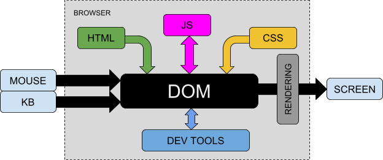
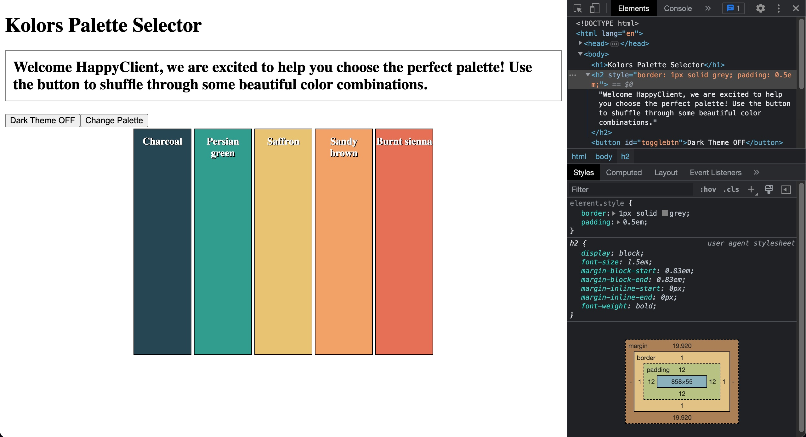

Module 1: The DOM
HTML and the DOM
Static web pages with HTML and CSS might work fine for some scenarios. But now we are going to start adding more functionality to our applications, by building dynamic web pages!
One of the first steps in building vibrant, dynamic web pages and applications is learning about the Document Object Model, or DOM for short. The DOM is an Object (with methods and properties) exposed by the browser to the application, allowing your code to change the page. DOM manipulation is at the core of every framework, and before we start using frameworks, we need to understand the DOM.
A large part of your dynamic web page will rely on JavaScript code running in the browser, monitoring interactions from users, making calculations, to ultimately change elements and styles on the page. To accomplish that, the code will interact with the DOM to monitor events and update the page. The initial HTML and CSS files will act as a placeholder for the startup page, defining elements and styles, which can be selected and modified by the JavaScript code.
The DOM is a standard embraced by the Industry, enabling applications to behave dynamically and consistently, regardless of the browser being used. By accessing every single piece of the webpage, the code running in the browser can arbitrarily change anything in the page, at any time! In theory, the DOM is language-agnostic, but we will be working with JavaScript throughout the rest of this Sprint.
This is a high-level representation of the browser, which will become more clear as we move on. Notice how each everything you've learned to this point is represented in the DOM:
The image shows an internal diagram of the browser, where HTML, JavaScript and CSS files collectively define the DOM, which is rendered to the screen. The DOM is also connected to external sources such as mouse and keyboard, to be able to react to user interactions and possibly update the screen. Finally, the DOM is also connected to the browser's development tools, which can be used to inspect and modify the local representation of the DOM on the user's screen.
To access and modify elements in the page, the JavaScript code will read and write properties, as well as execute methods of the DOM object. Under the hood, the browser will receive updates and render a new page. In practice, the DOM is acting as an interface between the application (JS code) and the user's screen / mouse / keyboard.
Developers can also use the browser's Developer Tools to quickly interact with the DOM, making it easy to debug and experiment.
In this Core Competency, you will learn how the DOM is structured and how to leverage the DOM to turn your static webpage into a dynamic webpage.
So let's get started!
Understanding the DOM
When a web page is loaded into a browser, the browser first looks for the HTML file to start building the page in memory. The HTML file may have external references or internal code for CSS, JavaScript etc., and all this collection of instructions are used to build a model for the page's look and functionality. In the end, this model - or representation - will contain every single piece of the rendered page: sections, tags, graphics, text, and their corresponding styles and event listeners.
This model, as we know, is an object called DOM (Document Object Model). Notice that the DOM is not the actual code that renders the page, but instead, an interface (Application Programming Interface, or API) to the browser's internal rendering engine, which can be accessed programmatically.
The DOM is built as a data structure known as a 'Tree' because parent elements have nested children elements (or leaves). As with physical trees, we can follow tree branches to get to the exact leaf (or leaves) that we want to access. Each branch of our DOM tree can be its own tree. It is important to remember this as we move through this lesson.

When the webpage is loaded and the DOM is built, developers get access to it in the form of the global Javascript object called document. document contains the entire hierarchy of the page, each element (or DOM node), and dozens of built in methods and properties. We can use these methods and properties to manipulate what we see on the screen. The 'document' object tree is intimately linked to the actual HTML structure of the page. If you update the DOM, you'll update the page.
Note: There are so many methods and properties on document (and its subsequent elements and collections) that it would take a lot longer to properly cover them all. We will only be covering the few most commonly used. From this point forward you will be expected to reference the official documentation to learn more about the different methods and properties available, when your need arises for something other than what we have taught. This is a very good habit to get into as we progress deeper into the course.
How to Build It
Let's look at a simple example of building a webpage that demonstrates the DOM structure. This example creates a color palette selector:
<!DOCTYPE html>
<html lang="en">
<head>
<title>Kolors Palette Selector</title>
<style>
.container {
display: flex;
justify-content: center;
}
.rectangle {
border: 1px solid black;
margin: 2px;
width: 10vw;
height: 50vh;
text-align: center;
padding-top: 10px;
font-weight: 700;
color: white;
text-shadow: 1px 1px black;
}
</style>
</head>
<body>
<h1>Kolors Palette Selector</h1>
<button type="button" id="palettebtn">Change Palette</button>
<div class="container">
<div class="rectangle"></div>
<div class="rectangle"></div>
<div class="rectangle"></div>
<div class="rectangle"></div>
<div class="rectangle"></div>
</div>
</body>
</html>
As you can see in this example, the DOM tree structure starts with the HTML root element, branches into head and body sections, and further branches into various elements like the button and container div with its five rectangle children. This hierarchical structure is what makes DOM traversal and manipulation possible.
Inspecting the DOM with Chrome DevTools
Now that we understand the concept of DOM, let's investigate it a bit further by visiting a live website and updating the DOM manually. Follow these steps in order:
Hands-on DOM Inspection Tutorial
Prerequisite: This tutorial assumes you are using Google Chrome. You can get similar results in any other browser but these steps were tailored for a chrome experience.
- Navigate to bloomtech.com
- Right click on the main heading/title and you should see a dropdown with an option to inspect. Click that option and chrome developer tools should activate.
- The developer tools should be showing the selection you made when you right clicked.
- Double click the content of the heading. You should now be able to edit the text of the header.
- Update the text with anything you'd like. For this example, I will update the text to say "Hello there!" You won't see any changes until you deselect the content in the chrome developer tools.
- Now try updating the content and HTML of other elements on the page.
Notice that if you refresh the page, the changes you made are gone! That is because the elements you were editing existed only in the internal model in memory, and were not permanent!
You now have experienced editing the DOM without writing any code, just by using the inspector tool. Next, you will briefly interact with DOM programmatically, using the browser's console:
Open the console in your web browser by pressing F12 on Windows or command + option + i on Mac. Enter document in the console:
> document
Pro Tip: typing a variable name in the console is the same as logging the contents of the variable by using console.log(variable_name).
Click the arrow to expand the object. Notice how it contains all of the HTML elements (otherwise now known as DOM nodes) on the page. Hover over these nodes and notice how the element on the page is highlighted.
How to Build It
Let's walk through how to build and test this color palette application using Chrome's developer tools:
- First, load the page in Chrome to see the initial layout with the title and five empty rectangles
- Open Chrome DevTools (F12 or right-click > Inspect)
- In the console tab, type
documentto examine the DOM tree structure - Notice how the document object shows all HTML elements in a hierarchical tree matching your code
- Hover over elements in the tree to highlight them in the page
- Right-click one of the rectangle divs and select "Inspect"
- In the Styles tab, find the .rectangle class
- Add
background-color: yellow;to test coloring
This testing process reveals important implementation details:
- The document object provides programmatic access to all page elements
- Each rectangle div can be individually selected and styled
- The background-color property will be key for setting palette colors
- Changes made in DevTools are temporary and reset on page reload
This exploration through DevTools helps validate the DOM manipulation approach needed for the final implementation - selecting individual rectangle elements and updating their background colors programmatically rather than modifying the CSS class directly.
Inspecting the global document object
The window object refers to the actual window (or tab) where the JavaScript code is running.
Some may argue that the window object is not really part of the DOM, but a separate object model exposed by the browser. In our case, it really doesn't matter, since they are all global objects, with similar APIs, which can be accessed by the JavaScript code to change the page.
A window object always contains a document object (the tree structure of the contents of the page), and also properties and methods related to the actual window (height, width, browsing history, browser version, open URL, show alerts, enter fullscreen mode, resize etc.)
Pro Tip: when your JavaScript code runs a global function like setTimeout, it is actually running a method from the global window object! The window object is in fact the global scope for the script, but we don't need to explicitly write 'window.setTimeout'.
Once again, open the console in Chrome (F12 on Windows or command + option + i on Mac), enter window and expand its contents. You will notice the object contains literally dozens of properties and methods (which are followed by the 'f' symbol), and possibly some particular global variables defined by the current page's script.
Let's try some of them!
The window object has some interesting methods for dialogs. Type in the console to see what happens:
> window.alert("You have been hacked!");
This will display a simple pop-up message for the user.
> window.prompt("Enter your super-secret password to continue...");
This will stop the execution of the script to gather input from the user. The input is returned as a string. If the user clicks cancel, null is returned.
Pro Tip: by stopping the execution of the script, your application might behave unexpectedly, particularly if it's waiting for a timer or listening for other events. Always make sure that it is safe to halt execution.
The location object inside the window object has properties and methods to get, for instance, the current url and the originating site. Let's do a full page reload from the server:
> window.location.reload(true);
The history property can be used to access information about any previously visited pages in the current browser session. Let's first verify if we have anything in our history:
> window.history.length;
And then go back to the previous page:
> window.history.back();
It's often desired to open a new window / site from within your script. Let's assign this new window to a const so we can access it later:
> const newsite = window.open("https://google.com");
Let's access the screen object to check some dimensions:
> window.screen.height;
for the total height of the current window, and:
> window.screen.availHeight;
for the actual page area, excluding menus.
Finally, just for fun, let's access the document object inside the window to make a radical page update:
> window.document.write("What's happened!?");
At this point, you are probably convinced that your application can do pretty much anything to create very interesting and dynamic pages! You can rely on the browser's Developer Tools to try any code or update any page element manually.
How to Build It
Kolors is ready to start designing and coding the script for the dynamic website!
The PM wants to welcome the page visitors, give them a more personal experience and possibly collect some data which can be useful later. Your first step is to get the client's name using a pop-up. This will be used later to display some information on the page:
<script>
const clientName = window.prompt("Welcome to Kolors! Please enter your company's name:");
</script>
For now, this code is added inside a new <script> tag in the HTML file.
Inspecting a DOM node
Let's dig a little deeper and check some properties and methods of one of the document nodes. The body is probably a good choice since it will often contain the bulk of the page content.
document.body returns a reference to the body node, allowing us to set or read the document's element. The node returned is an object inside the document object, with several properties and methods. Let's check some properties!
Navigate to https://google.com
Its body should have no background color set. You should get an empty string by typing in the console:
> document.body.style.backgroundColor;
Let's make the page really ugly:
> document.body.style.backgroundColor = "Yellow";
Argh! Change it back:
> document.body.style.backgroundColor = "";
By the way, when setting style properties this way, in effect you are adding an inline style to the HTML, meaning it will most certainly override any CSS definitions! Keep that in mind and understand that you could also set styles programmatically by accessing and modifying the stylesheet of the DOM (although we are not covering that here).
Let's log the complete HTML inside the body:
> document.body.innerHTML;
Pretty much every single DOM node will have the innerHTML property. Who could imagine such a large content for a simple page?
The returned content is hard to read in the console, being a serialized string with no coloring or indentation. But it should be easy to work with inside a well designed script, which could remove the tags, replace text etc. If you go through the list of properties and methods by typing:
> document.body.innerHTML. // notice the dot in the end, instead of the semicolon, making a list of properties and methods appear in the console
You will realize how you could easily manipulate the innerHTML text with methods such as slice, split, trim etc.
What are the child nodes inside the body?
> document.body.childNodes;
And you get a nice visualization of the NodeList "array" (more on this later), including any classes or IDs associated with the elements. And:
> document.body.parentNode;
Should return the complete section, including the body itself. This next code:
> document.body.nodeType;
Should return 1, meaning the body is an ELEMENT. Other common node types are 2=attribute, 3=text, 9=document.
This command below should return 9, right?
> document.body.parentNode.parentNode.nodeType;
Finally, notice there are some global variables inside the document tree, like those containing closure_uid in the Google homepage. These variables (or constants) have been declared somewhere in the page script and are available to any code that you add to the scripts.
How to Build It
While designing and experimenting with the Kolors page In the console, you log the body to check its contents:
> document.body;
This is a good practice to be able to focus on the main code, as most of the time you don't really need to see information about other tags like header, title, style etc.
The div.container has a 'flex' icon in the elements tab (and also in the console), indicating this is a parent flexbox container, nice!
As the developer, you know that changing the background color of the rectangles is ultimately the goal of the script. You decide to test it using the console. You choose one of the rectangles, right-click, and select "Edit as HTML". It is easy to toggle any CSS attributes, and even add new ones inside the element.style section.
At this point, you are very comfortable with the Developer Tools and have revisited several possibilities to visualize the DOM, manipulate properties and manage the window. You can't wait to write JavaScript code to actually build the application!
Conclusion
This was a deep one! You have learned what the DOM is, how it relates to the HTML page and the browser, and how you can access the DOM using different approaches to change the page!
We don't need to complicate it. The DOM is just a bridge for our script to read from and write to the browser. If you have a solid HTML/CSS file to begin with, you won't ever have to worry about editing HTML or CSS in your application. Everything will be done through JavaScript, in real time, for a very dynamic and interactive web page.
Selecting DOM Elements
At this point, you should have a good understanding of the Document Object Model. You have interacted with the DOM using the console, and other developer tools to manipulate elements, change styles and text, read and write properties, and even run methods.
In this Core Competency, you will learn how to select elements of the live page to manipulate them with code. Selecting elements (or nodes) is one of the first steps in every DOM manipulation application.
There are many ways of selecting elements. In it's simplest form, you can select the body and the head by asking explicitly for them (document.body, document.head). However, things may get impractical when you need to select specific elements down the tree. Thankfully, the 'document' object has several built-in methods for accessing the exact element(s) you want. Let's dive in!
Selecting nodes by ID
The original JavaScript methods for selecting elements from the DOM start with 'getElement'. These methods take a single string as the only argument, being the desired element's id, tag, or class.
Let's start with getElementById.
This method will take a single string as an argument containing the id of an element, search through the DOM, and return the matching element (which should be unique).
document.getElementById('idName');
The returned value is an object representing the node. Most of the time, you would assign the returned node to a variable to be able to manipulate the node later in the code.
How to Build It
Let's revisit this section of code for the Kolors application:
<!DOCTYPE html>
<html lang="en">
<!-- ... -->
<body>
<h1>Kolors Palette Selector</h1>
<button type="button" id="palettebtn">Change Palette</button>
<div class="container">
<div class="rectangle"></div>
<div class="rectangle"></div>
<div class="rectangle"></div>
<div class="rectangle"></div>
<div class="rectangle"></div>
</div>
</body>
</html>
You remember from the application briefing that the page visitor would use a button to see different color palettes. When designing the HTML, you have instinctively added a button and assigned an ID for it. Good choice because now it will be easy to select this node to access its properties and methods. At some point, you know that this button will react to clicks and possibly receive a different styling and text content.
You create a reference to the button and add it to your code:
const palleteBtn = document.getElementById('#palettebtn');
Selecting collections by class and tag
The getElementsByTagName method will also take a single string as an argument containing the tag name of the elements you want to select. It will return an array-like object called HTMLCollection containing all the elements in the document that match the tag name supplied, regardless of their actual location in the tree.
We will discuss what an HTMLCollection is after we talk about the rest of our selector methods. To get all the nodes in the document, you would write:
document.getElementsByTagName('p');
The 'array-like' return value is a collection of objects, each one referencing a p node.
The getElementsByClassName method will take a single string as an argument containing the class of the elements you want to select. It will return an HTMLCollection containing all of the elements that hold the given class.
The following code:
document.getElementsByClassName('big');
Will return a collection with all the elements pertaining to the 'big' class, regardless of their actual type/tag (p, h1 etc.).
How to Build It
As the developer for Kolors, you are creating variables for nodes that you will eventually manipulate in code. One of the key purposes of the application is to dynamically change the background color of the rectangles.
Let's revisit the relevant HTML:
<!DOCTYPE html>
<html lang="en">
<!-- etc -->
<body>
<h1>Kolors Palette Selector</h1>
<button type="button" id="palettebtn">Change Palette</button>
<div class="container">
<div class="rectangle"></div>
<div class="rectangle"></div>
<div class="rectangle"></div>
<div class="rectangle"></div>
<div class="rectangle"></div>
</div>
</body>
</html>
To select all rectangles, you realize that you could use either tag or class:
//This will get the rectangles and also the first div (container) node.
const colorBars = document.getElementsByTagName('div');
//This will return the exact 5 rectangles (nodes).
const colorBars = document.getElementsByClassName('rectangle');
More than ever, you are convinced that properly assigning classes and IDs when designing the HTML can greatly facilitate the JavaScript code!
Selecting nodes with .querySelector()
Over time, new node selection methods have been incorporated into JavaScript, particularly after the new CSS selectors were defined and adopted. These methods start with querySelector and allow us to select element(s) based on CSS style selectors (remember . is for classes and # is for ids). Each method takes a string containing the selector(s) and returns the element(s).
The querySelector method will search for and return the first element that matches the value passed into the method. Remember that the most significant change from the older DOM selection methods is that we must pass the proper CSS selector into the argument. If we passed custom-style and not .custom-style we would error out because the dot needs to be added to specify the custom-styleclass.
To return the first node pertaining to the custom-style class, you would use:
document.querySelector('.custom-style');
Don't forget the string quotes! And to get the node with the custom-id ID:
document.querySelector('#custom-id');
How to Build It
You are trying to select each of the rectangles on your Kolors page. If the rectangles had IDs, you would be able to select them individually using this method. Maybe they should have ids, but for now, you will have to resort to tags or classes. The problem is only the first node would be returned. So this method doesn't seem appropriate for selecting the rectangles.
Nevertheless, you could use querySelector to get the button or the flex container, since they are unique in the document:
// Either one to return the button node
document.querySelector('#palettebtn');
document.querySelector('button');
// To get the div.container node
document.querySelector('.container');
And by using the CSS selector style, you can get very specific if you need it, with something like this:
// To get the first div with .container class inside the body
document.querySelector('body div .container');
Selecting node lists with .querySelectorAll()
The last method, querySelectorAll, will search for and return all elements matching the query string. This method returns the nodes in an array-like object called NodeList.
A NodeList is also an 'array-like' object similar to an HTMLCollection, but exposes the forEach() method which can be very useful to iterate over the nodes.
If you wanted to select all elements with the .special class attribute, but only those inside the body, you would write:
document.querySelectorAll('body .special');
And get a NodeList containing one or more objects, each referencing a special class node inside the body.
How to Build It
The application's specifications dictate that all rectangles should change color when the user selects a new palette. You like the idea of working with NodeLists and being able to quickly iterate over all the rectangles instead of selecting one by one.
By using the class name, you can assign all of the rectangle nodes to a reference by simply using:
const colorBars = document.querySelectorAll('.rectangle');
To test and verify the selection, you use the browser's console and type:
> const colorBars = document.querySelectorAll('.rectangle');
> colorBars;
NodeList(4)
0: div.rectangle
1: div.rectangle
2: div.rectangle
3: div.rectangle
4: div.rectangle
length: 5
__proto__: NodeList
Iterating over a node list with .forEach()
Before iterating over a NodeList object using forEach(), let's learn about some differences between NodeList, HTMLCollection, and Array.
When we use getElementsByClassName() or querySelectorAll(), we get back either an HTMLCollection or a NodeList, respectively. We refer to these as 'array-like objects.' They both have numerical zero-based indices and a length property, but that is all they share with an Array. No .reduce(), .map(), or any other array method exists on these objects.
Consider this HTML:
<header> <h1 class="main-header">Selectors!</h1> <nav class="main-nav"> <a href="#" class="nav-item">Home</a> <a href="#" class="nav-item">About</a> <a href="#" class="nav-item">Blog</a> <a href="#" class="nav-item">Contact</a> </nav> </header>
If you select a single node and log it:
> const mySelection = document.querySelector("a")
You get:
<a href='#' class='nav-item'>Home</a>
This is the representation of the node in the console, but remember that it's an object with properties and methods. You will learn about some of the most common properties and methods of document nodes later. For now, you can log the length of the text content of the node with the following:
> mySelection.innerText.length; 4
Now if you select multiple nodes and log the result:
> const multipleSelections = document.querySelectorAll('a');
> multipleSelections;
As expected, the result is quite different from the first case:
NodeList(4) 0: a.nav-item 1: a.nav-item 2: a.nav-item 3: a.nav-item length: 4 __proto__: NodeList
Again, this is a graphical representation of a NodeList object. Each one of the nodes in the list is exactly the same type of node that was returned in the first case, when selecting a single element. You can verify that with:
> multipleSelections[2]; <a href='#' class='nav-item'>Blog</a>
Accessing elements in this way is extremely powerful and will allow you to be creative if an HTML solution is not possible or practical. For example, imagine you didn't have a class or ID to hook into; you could use the NodeList index to get the job done!
Pro tip:
The Array class contains a method to create an array object from an array-like object called .from(). To use this method, you would pass the HTMLCollection object or the NodeList object as its only argument:
> const nodeArray = Array.from(multipleSelections);
From this point, you could use any array method to manipulate the nodes!
In many cases, though, the forEach() available in a NodeList should be enough. This is an example to create a loop over all nodes and log their text content:
multipleSelections.forEach(function(currentNode, currentIndex){
console.log('This is node index:', currentIndex);
console.log(currentNode.innerText);
};
How to Build It
Remember that all five color bars (rectangles) are already available in your script through the colorBars NodeList.
It is clear from Product Management that at some point, the button on the page will trigger a function, which will, in turn, iterate over all color bars and change their color. You decide to add more code to the application as a placeholder:
const colorBars = document.querySelectorAll('.rectangle');
const changePalette = () => {
colorBars.forEach((rectangleElement, rectangleIndex) => {
// future manipulation code
});
};
Conclusion
Selecting nodes (elements, text, etc.) from the DOM is critical to every dynamic application. The document object offers several methods to precisely select what you need.
By assigning selections to variables, you will have the nodes available to your application throughout the life of the page.
The querySelector methods benefit from the CSS selectors format and return an iterable NodeList when selecting multiple nodes.
Manipulating DOM Elements
While selecting nodes is a necessary step before actually doing something with them, the core of the application is really how and when you manipulate the nodes by changing their styles, text, or attaching event listeners.
Every node selected is an object in itself, exposing properties and methods relevant to the node type. After we have captured our node (e.g. const element = document.querySelector('#idName');) we can access that element and assign values to its properties. Once again, there are dozens of properties and methods given to us on each element. You will read about many of the commonly used properties and methods here.
Setting text with .textContent()
When we want to update the text using the DOM, the go-to property is called textContent. We can both read and write text inside of elements using textContent. The textContent property essentially represents whatever text is between the open and closing tags of an HTML element.
If the HTML element has nested (children) elements, the text from all children will also be returned, excluding their HTML tags.
You can use the assignment operator = to reset the text of an element. Keep in mind that setting this property on a node removes all of its children and replaces them with the new single text node.
Consider the HTML below:
<h2 class="second-heading">I am the DOM</h2>
You can update the text in this h2 element. First, set up a reference to our element on the DOM:
> const secondHeading = document.querySelector('.second-heading');
You are now prepared to update the content of our heading. You can update the content to say "DOM updated!"
> secondHeading.textContent = "DOM updated!"; > secondHeading; <h2 class="second-heading">DOM updated!</h2>
Notice that you are first getting the text node of the element and then setting a new value!
How to Build It
Let's look at an example of using textContent to update multiple elements. In this example, we'll build a color palette display that updates when a button is clicked.
const palette = [ "Charcoal", "264653", "Persian green", "2a9d8f", "Saffron", "e9c46a", "Sandy brown", "f4a261", "Burnt sienna", "e76f51", ];
We can create a function that will update the text content of multiple color bars when triggered:
const palleteBtn = document.getElementById('palettebtn');
const colorBars = document.querySelectorAll('.rectangle');
const changePalette = () => {
colorBars.forEach((bar, index) => {
bar.textContent = palette[index*2];
//future code
});
};
The forEach loop iterates through each color bar element, using the index parameter to access corresponding color names from our palette array. By multiplying the index by 2, we skip over the hex codes and only display the color names.
Setting attributes with .setAttribute()
HTML elements may have several attributes, either hard coded or through a CSS stylesheet. Updating HTML attributes is vital to DOM manipulation.
Consider the HTML tag below:
<img class="custom-img" src="" alt="Kitty image" />
Updating the DOM usually happens in two steps.
Step 1: Select the element:
> const catImage = document.querySelector('.custom-img');
Step 2: Use the desired attribute property to update the element
> catImage.alt = 'Just a cute cat!';
You can even chain the two steps together like this:
> const catImage = document.querySelector('.custom-img').alt = 'Just a cute cat!';
Now let's update the (empty) src attribute with this URL:
https://images.pexels.com/photos/20787/pexels-photo.jpg?auto=compress&cs=tinysrgb&h=350
Instead of accessing the property with the "dot" notation (e.g. element.src) and setting the value with the equal sign (=), you could also use the .setAttribute() method like this:
catImage.setAttribute('src', 'https://images.pexels.com/photos/20787/pexels-photo.jpg?auto=compress&cs=tinysrgb&h=350');
.setAttribute() takes two arguments, the attribute to set, and the value to be assigned to that attribute. By using a method instead of the property, you would have more flexibility in some scenarios. For instance, you could create a reusable function that would take the the element, attribute and value:
function flexAttribute(targetElement, attr, val) {
tagetElement.setAttribute(attr, val);
}
How to Build It
Let's add hover text to our color bars that shows both the color name and hex code. We can do this by setting the title attribute:
const changePalette = () => {
colorBars.forEach((bar, index) => {
bar.textContent = palette[index*2];
bar.title = palette[index*2] + "- #" + palette[index*2 + 1];
//future code
});
};
Now when users hover over a color bar, they'll see both the color name and its corresponding hex code value. The title attribute provides a native browser tooltip that appears on hover, making it a simple way to add additional information without cluttering the interface.
Setting inline styles with .style()
Every element contains a style object which can be accessed through the .style property. The style object contains every available style as a key and a value.
When using .style, you can read any existing HTML inline style set on the element, or add new ones.
Using this HTML as reference:
<header>
<h1 class="main-header">Dom Manipulation</h1>
<nav class="main-nav">
<a href="#" class="nav-item">Home</a>
<a href="#" class="nav-item">About</a>
<a href="#" class="nav-item">Blog</a>
<a href="#" class="nav-item">Contact</a>
</nav>
</header>
You can select a node and change its style:
> const mainHeader = document.querySelector('.main-header');
> mainHeader;
<h1 class="main-header">Dom Manipulation</h1>
> mainHeader.style.color;
''
> mainHeader.style.color = 'blue';
'blue'
Important Note
Changing a property on the style object will effectively give this element an inline style. Inline styles have the highest specificity, overriding any other selector except !important. VERY IMPORTANT to note that this does NOT access or change anything in the CSS file.
See this other example using forEach():
const navNode = document.querySelector('.main-vav');
navNode.forEach((node, idx) => {
node.style.textTransform = "uppercase";
console.log("The text from element",idx,"in the NodeList has changed to:",val.innerText);
});
When using JavaScript to update CSS style properties, we need to be careful to remember that JavaScript does not accept dashes (-) as a valid naming value! Therefore, whenever a CSS property contains a dash (such as background-color), we must use camel casing in JavaScript.
Example in CSS:
.some-class {
background-color: gray;
}
The JavaScript version would look like this:
const someClass = document.querySelector('.some-class');
someClass.style.backgroundColor = "gray";
Pro Tip
Don't forget the string quotes when you assign a value to a CSS property.
How to Build It
Let's look at a practical example of changing styles with JavaScript. In this code snippet from the Kolor application, we're updating the background colors of color bars:
const changePalette = () => {
colorBars.forEach((bar, index) => {
bar.textContent = palette[index*2];
bar.title = palette[index*2] + "- #" + palette[index*2 + 1];
bar.style.backgroundColor = "#" + palette[index*2 + 1];
});
};
This code:
- Iterates through each color bar element
- Sets the text content to the color name
- Adds a title attribute with the color name and hex code
- Changes the background color using the hex value
Manipulating classes and IDs with .className, .classList and .id
As the names suggest, you can use .className and .id properties to read and write the class and id attributes of any node.
.className accesses or assigns a string containing all of the classes on the element. While .id accesses or assigns a string containing the id of the element.
Setting these properties will override declarations in the CSS stylesheet. If you need an element to be part of multiple classes, make sure to include all of them in the assigned string!
Access the className and id properties of the mainHeader node in the console:
> mainHeader.className; 'main-header' > mainHeader.className = 'main-header warning-style'; 'main-header warning-style' > mainHeader.id; '' > mainHeader.id = 'header1'; 'header1'
.classList returns an array-like object of all the classes on the element and makes it easy to add or remove individual classes for the node. There are many useful methods available on classList.
A classList is a DOMTokenList type. Similarly to a NodeList, A DOMTokenList is an array-like object with a numerical zero-based index, a length property, and several methods like .contains() and .forEach().
Most notably, the methods .add(), .remove(), and .toggle() are very useful. Toggle will add the class if it does not exist and remove it if it does. Very helpful in some common cases!
These methods take a single string representing the class:
> mainHeader.className;
'main-header'
> mainHeader.classList.add('bold-header');
> mainHeader.classList;
DOMTokenList(2) ['main-header', 'bold-header', value: 'main-header bold-header']
> mainHeader.className;
'main-header bold-header'
> mainHeader.classList.remove('main-header');
> mainHeader.className;
'bold-header'
> mainHeader.classList.toggle('highlight');
> mainHeader.className;
'bold-header highlight'
> mainHeader.classList.toggle('highlight');
> mainHeader.className;
'bold-header'
How to Build It
Let's look at a practical example of using IDs and classList in the Kolors project:
First, we can set unique IDs for each color bar using the HEX codes from our palette:
const changePalette = () => {
colorBars.forEach((bar, index) => {
bar.textContent = palette[index*2];
bar.title = palette[index*2] + "- #" + palette[index*2 + 1];
bar.style.backgroundColor = "#" + palette[index*2 + 1];
bar.id = palette[index*2 + 1];
})};
Then, we can add theme-switching functionality using classList.toggle():
In your CSS:
.dark-theme {
background-color: black;
color: white;
}
And the JavaScript function to toggle the theme:
const toggleTheme = () => {
document.querySelector('body').classList.toggle('dark-theme');
};
This demonstrates how IDs can be used for unique element identification and how classList.toggle() provides an elegant way to switch between styles.
Accessing the children and the parent nodes with .parentNode and .children
The .parentNode and .children properties are used to access relatives of the element, so you can effectively traverse the document tree up and down. In practice, using these properties is like making a new selection. You would then access some other property of the selection to perform an update.
These properties are read-only.
Again, let's use the HTML below:
<header>
<h1 class="main-header">Dom Manipulation</h1>
<nav class="main-nav">
<a href="#" class="nav-item">Home</a>
<a href="#" class="nav-item">About</a>
<a href="#" class="nav-item">Blog</a>
<a href="#" class="nav-item">Contact</a>
</nav>
</header>
And select a new node to test the properties:
> const navNode = document.querySelector('.main-vav');
// returns an HTMLCollection of all the children of that node
> navNode.children;
HTMLCollection(4) [a.nav-item, a.nav-item, a.nav-item, a.nav-item]
// returns the parent node of the node
> navNode.parentNode;
<header>...</header>
How to Build It
Let's look at a practical example of using these properties. When building a color palette application like Kolors, you might want to inspect the relationships between elements:
// temporary code
const containerNode = document.querySelector('.container');
console.log('These are the children of the flex container:');
console.log(containerNode.children);
console.log('And this is the parent, with all the siblings:');
console.log(containerNode.parentNode);
This code helps visualize the DOM structure by logging the container's children (the color swatches) and its parent element along with siblings. This kind of debugging code is valuable during development but should be removed before production.
Conclusion
Manipulating nodes is at the core of a dynamic application! Styles, attributes, classes and IDs can be easily changed by directly accessing the properties of a node.
As long as you design a minimal and flexible HTML/CSS structure, there's no need to make important hard-coded decisions early on. You are free to change elements as you code the application, focused on JavaScript.
For instance, if you assign IDs to nodes that are supposed to be manipulated inside your application, it all comes down to making a simple selection and accessing some properties.
The classList array-like object is particularly useful when you create classes (including complex ones) in the CSS stylesheet, saving you a lot of time and code in the application implementation.
Adding New Elements to the DOM
In a dynamic application, you will often need to create elements which were not originally hard-coded in the HTML.
A typical scenario is to add elements based on user interaction, like displaying a warning pop-up or expanding an element to show more text. Since you need to be conscious about the page's "real estate", cluttering and ease of use, and you never know how the user will interact with the application, a lot of the elements may be created on the fly, instead of being hard-coded in the HTML.
Creating elements programmatically usually translates to more responsive and flexible applications!
In this Core Competency, you will learn how to create elements and attach them to the DOM using different approaches. As you will see, any type of element can be created and inserted anywhere in the document.
Creating DOM elements with .createElement()
The .createElement() method will generate a new element in memory, meaning it won't be attached to the DOM until you explicitly add it to the document. You will be able to style the new element and insert it to the page only when you are ready.
The argument to this method is the tag name (e.g., h1, p):
const newHeader = document.createElement('h1');
The code above will create an h1 element in memory. Don't forget to assign the new element to a reference, otherwise you won't be able to later manipulate it and attach it to the DOM.
If you log the new node in the console, you will get an empty h1 element:
> newHeader; <h1></h1>
How to Build It
Let's look at a practical example. In the Kolors application, when the page loads, you'll want to:
- Ask for the company name using a prompt
- Create a welcome message header
- Create a toggle button for dark mode
Here's how to do it:
// Get company name on page load
const clientName = window.prompt("Welcome to Kolors! Please enter your company's name:");
// Create welcome message header
const welcomeMsg = document.createElement('h2');
// Create dark mode toggle button
const toggleBtn = document.createElement('button');
These elements are now created in memory but aren't yet visible on the page. In the next section, we'll learn how to add content to these elements and attach them to the DOM.
Building out a new element
With the newHeader in memory, you can manipulate it just like any other existing element in the DOM.
You could add text and some styling with:
newHeader.textContent = "I'm a fresh H1 header!"; newHeader.style.color = "yellow";
And log the resulting node to verify:
> newHeader; <h1 style="color: yellow;">I'm a fresh H1 header!</h1>
How to Build It
Let's continue building out the Kolors page elements. First, let's add the welcome message text and some basic styling:
welcomeMsg.textContent = 'Welcome ' + clientName + ', we are excited to help you choose the perfect palette!\nUse the button to shuffle through some beautiful color combinations.'; welcomeMsg.style.border = '1px solid grey'; welcomeMsg.style.padding = '0.5em';
Next, we'll set up the toggle button with its initial text and an ID for later reference:
toggleBtn.textContent = 'Dark Theme OFF'; toggleBtn.id = 'togglebtn';
These elements are now fully configured but still only exist in memory. In the next section, we'll learn how to add them to the page.
Adding children with .appendChild() and .prepend()
You're now ready to make your newly created elements show up on the page! All elements created in memory will be inserted (or attached) to some existing element in the document, as a child.
You first select the parent node and then use either its .appendChild() or .prepend() methods to attach the child. Calling one of these methods will add your element into the DOM.
Let's use the HTML below as an example:
<header>
<h1 class="main-header">Dom Manipulation</h1>
<nav class="main-nav">
<a href="#" class="nav-item">Home</a>
<a href="#" class="nav-item">About</a>
<a href="#" class="nav-item">Blog</a>
<a href="#" class="nav-item">Contact</a>
</nav>
</header>
By using .appendChild(), you can add a new element under the selected element after all of the existing children:
> document.querySelector('header').appendChild(newHeader);
You effectively added the new h1 node to the end of the header section, as the last child, after the nav section. The resulting HTML structure in the DOM (not in the original HTML file!) will be:
<header>
<h1 class="main-header">Dom Manipulation</h1>
<nav class="main-nav">
<a href="#" class="nav-item">Home</a>
<a href="#" class="nav-item">About</a>
<a href="#" class="nav-item">Blog</a>
<a href="#" class="nav-item">Contact</a>
</nav>
<h1 style="color: yellow;">I'm a fresh H1 header!</h1>
</header>
And by using .prepend(), you can add the element before all the other existing child elements:
> document.querySelector('header').prepend(newHeader);
You would get the new h1 element as the first child inside the header parent:
<header>
<h1 style="color: yellow;">I'm a fresh H1 header!</h1>
<h1 class="main-header">Dom Manipulation</h1>
<nav class="main-nav">
<a href="#" class="nav-item">Home</a>
<a href="#" class="nav-item">About</a>
<a href="#" class="nav-item">Blog</a>
<a href="#" class="nav-item">Contact</a>
</nav>
</header>
How to Build It
Let's look at a practical example. Say you have this HTML structure for a color palette app:
<body>
<h1>Kolors Palette Selector</h1>
<button type="button" id="palettebtn">Change Palette</button>
<div class="container">
<div class="rectangle"></div>
<div class="rectangle"></div>
<div class="rectangle"></div>
<div class="rectangle"></div>
<div class="rectangle"></div>
</div>
</body>
And you want to add a welcome message at the top and a toggle button at the bottom. You can use prepend() and appendChild() like this:
document.querySelector('body').prepend(welcomeMsg);
document.querySelector('body').appendChild(toggleBtn);
This will place the welcome message as the first element in the body, and the toggle button as the last element - effectively bookending your content.
Adding elements to the DOM with .insertAdjacentElement()
The .insertAdjacentElement() method is more flexible than .appendChild() or .prepend(), and it allows you to choose other positions to insert new elements. This method takes two arguments:
targetElement.insertAdjacentElement(position, element);
Where position is a string representing the position relative to the target element. The options for position are:
'beforebegin'- just before the target element, as a sibling'afterbegin'- similar to prepend(), as the first child inside the target element'beforeend'- similar to appendChild(), as the last child inside the target element'afterend'- just after the target element, as a sibling
Say you want to target an existing element in the page. The placement works like this:
<body>
<!-- beforebegin -->
<p>
<!-- afterbegin -->
Existing text (or element) inside the paragraph
<!-- beforeend -->
</p>
<!-- afterend -->
</body>
Important Note
The beforebegin and afterend positions only work if the node is in a tree and has a parent element.
Let's look at a practical example. Say you have this HTML structure for a color palette app:
How to Build It
Here's the HTML structure:
<div class="container">
<h1>Color Palette Generator</h1>
<div class="palette">
<div class="color" style="background-color: #FF5733">#FF5733</div>
<div class="color" style="background-color: #33FF57">#33FF57</div>
<div class="color" style="background-color: #3357FF">#3357FF</div>
</div>
<button id="palettebtn">Generate New Palette</button>
</div>
And here's how you would modify the JavaScript to place elements in specific positions:
document.querySelector('h1').insertAdjacentElement('afterend', welcomeMsg);
document.querySelector('#palettebtn').insertAdjacentElement('beforebegin', toggleBtn);
This code will:
- Place the welcome message right after the h1 heading
- Place the toggle button right before the "Generate New Palette" button
You haven't implemented the button behavior yet, and of course you only have one palette for now. But this is how the page looks like at this point:
Conclusion
In this module, you learned about the Document Object Model (DOM) and how to manipulate it using JavaScript. You explored DOM structure, selecting elements, and modifying content. You also learned about different methods for inserting and positioning elements within the DOM tree.
Key takeaways:
- The DOM represents HTML documents as a tree structure of objects
- Elements can be selected using methods like
querySelector()andquerySelectorAll() - DOM elements can be created, modified, and removed dynamically
- Elements can be inserted at specific positions using
insertAdjacentElement()
With these fundamentals, you're now equipped to create more dynamic and interactive web applications by manipulating the DOM effectively.